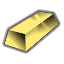
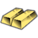
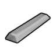
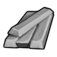

中世纪HSK本地补丁×1上游补丁×4装饰专用级·中世纪·金锭GoldBar
装饰专用级可塑成品 95 件:家具建筑90 · 穿戴件5
珠宝装饰件95
vs 塑料多 20 件(coronet、蜡烛…);比钢少 853 件 —— 如 凤凰装甲、鼠族面具… 都选不到它
① 起点 · Core_SK 的 Defs 写 Things/Item/Ingot (255,235,122)

ACore_SK BCore_SKCCore_SK
BCore_SKCCore_SK③ 生效(终态) Things/Item/Ingot (255,235,122) ← 10_Vile贴图还原.xml
 ACore_SK
ACore_SK
BCore_SK CCore_SK
CCore_SKThings/Item/Ingot StackCount (255,235,122)(255,235,122)被20条配方消耗贴图链 3 段
护甲 0.50/0.60/0.06 利钝 0.40/0.50 价值 35 质量 0.35 Bulk 0.35
stuff Precious
HSK HCMBar, PRSBar, HeavyBar
产自 Smelt gold alloy(火坑, 高炉/Metallurgy I - Bronze Age) ; Smelt Gold Coins into Gold Bars(金属提炼厂) ; Smelt gold alloy(金属提炼厂)
源 Core_SK
Items_Resource_Alloys_Medieval.xml
中世纪HSK本地补丁×1上游补丁×4装饰专用级·中世纪·银锭SilverBar
装饰专用级可塑成品 95 件:家具建筑90 · 穿戴件5
珠宝装饰件95
vs 塑料多 20 件(coronet、蜡烛…);比钢少 853 件 —— 如 凤凰装甲、鼠族面具… 都选不到它
① 起点 · Core_SK 的 Defs 写 Things/Item/Ingot (255,255,255)
ACore_SKBCore_SKCCore_SK② Vile 换成 Things/Item/Material/PureAluminium (200,200,200) ← Alloy_Patch.xml

aVile's Materials Science
bVile's Materials Science cVile's Materials Science
cVile's Materials ScienceThings/Item/Ingot StackCount (255,255,255)(180,173,150)被5条配方消耗贴图链 3 段
护甲 0.60/0.70/0.06 利钝 0.60/0.60 价值 5 质量 0.30 Bulk 0.30
stuff Precious
HSK PRSBar
产自 Smelt sterling silver alloy(火坑, 高炉/Metallurgy I - Bronze Age) ; Smelt Silver Coins into Silver Bars(金属提炼厂) ; Smelt sterling silver alloy(金属提炼厂/Metal processing II)
源 Core_SK
Items_Resource_Alloys_Medieval.xml